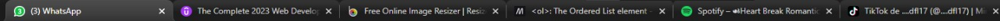
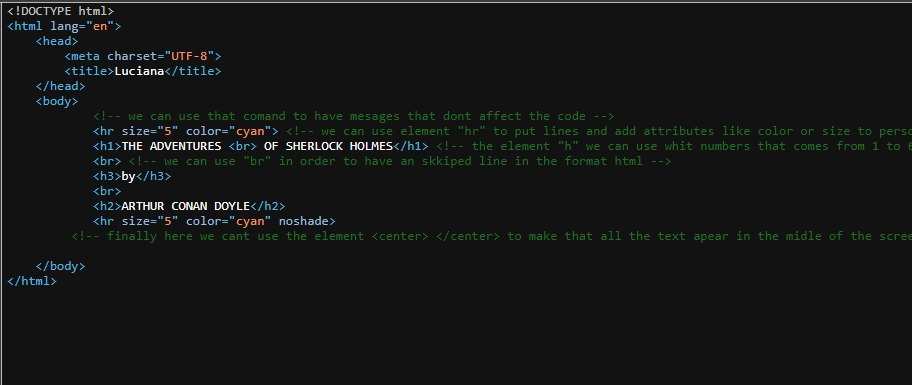

como puedes ver no hay nada más que este texto
porque aún falta
puedes ver que en google las páginas tienen un nombre como en este imagen

lee los mensajes que deje ahí para encontrar el mensaje final
tendrá este aspecto

lee la parte que esta en verde cuando logres entrar
si no lo logras, pideme ayuda